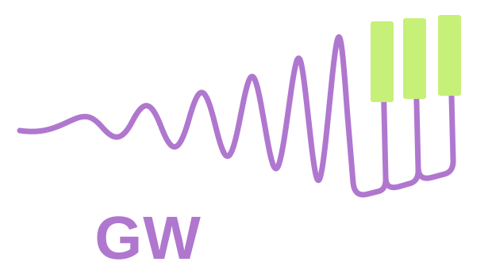

A rising voice
LALSimulation generates equal-mass, nonspinning IMRPhenomD signals, including inspiral, merger, and ringdown. Each note sets the model’s merger–ringdown amplitude peak parameter f_peak. Mass scales inversely with note frequency.

01 / THE INSPIRAL INSTRUMENT
Two bodies draw closer. Frequency rises. Turn the signature of a cosmic collision into something you can play.
Play the keyboard ↓Loading instrument…
The downloadable pack contains the original scientific waveforms.
Play detections in chronological order at 100 ms intervals, or select a 30-second calendar timeline that preserves relative gaps including breaks between observing runs, with each event’s components starting together, using mass-scaled equal-mass, nonspinning model chirps. This replaces the played distribution. It builds event by event as sounds start; after all events it matches the catalog. Stopping early keeps only events already started. Uses the current Musical/Scientific mode; these are model sounds, not detector recordings. Press again to stop or cancel preparation. Highlighted background lines show the nearest piano notes as each event starts; exact catalog masses determine the audio. Each highlight clears when its component sound ends; overlapping sounds on the same note keep that line lit.
■ LVK components ▧ Lime stripes: played components · □ White: currently sounding│ Muted lines: keyboard notes
The purple bars show LVK components; lime-striped bars show played components. White bars mark bins containing sounds currently playing; they return to lime stripes when those sounds end. Muted solid lines behind the bars mark piano notes’ component masses within the 0–150 M☉ range (all 88 notes remain in the table). Every note through A2 is labelled, then every second semitone through A3, followed by A notes above A3. Colours repeat every octave (all Cs share a colour); the most recently played note has a thicker line. Hover over a line for its note, or open the note-mass table below. Exact counts are available in the table below. The mass axis is linear, with 2 M☉ bins. Both series fill each bin’s width. Bar heights are component counts per bin, on a shared vertical scale. Each successful note playback contributes two equal-mass bodies; repetitions count. Played masses assume zero redshift; catalog masses are source-frame medians. This is a comparison of sounds with detections, not a population inference.
Download catalog snapshot · GWOSC source| Component mass (M☉) | LVK | Played |
|---|
| Note | Frequency (Hz) | Component mass (M☉) |
|---|
03 / BEHIND THE SOUND
LALSimulation generates equal-mass, nonspinning IMRPhenomD signals, including inspiral, merger, and ringdown. Each note sets the model’s merger–ringdown amplitude peak parameter f_peak. Mass scales inversely with note frequency.
These are model waveforms, not recorded detections. f_peak is a merger–ringdown model parameter, not the loudest bin of the full Fourier spectrum or the maximum instantaneous frequency. Samples are normalized and gently tapered for playback.
The ZIP covers a full 88-key piano (A0–C8), with one mono WAV per key, note metadata, and an SFZ mapping. The web keyboard is a shorter playable selection. Use a compatible sampler or import WAVs manually. A hardware keyboard may need its manufacturer’s conversion tool.
TAKE THE INSTRUMENT WITH YOU
88-key sound pack · A0–C8 · WAV + SFZ · 44.1 kHz
Original scientific waveforms, without the synthetic musical tone.